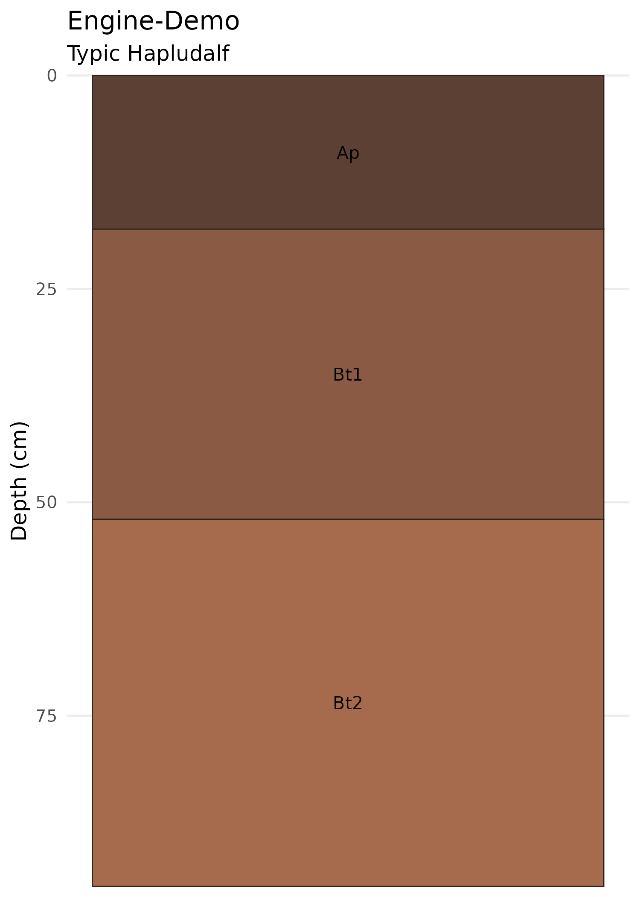
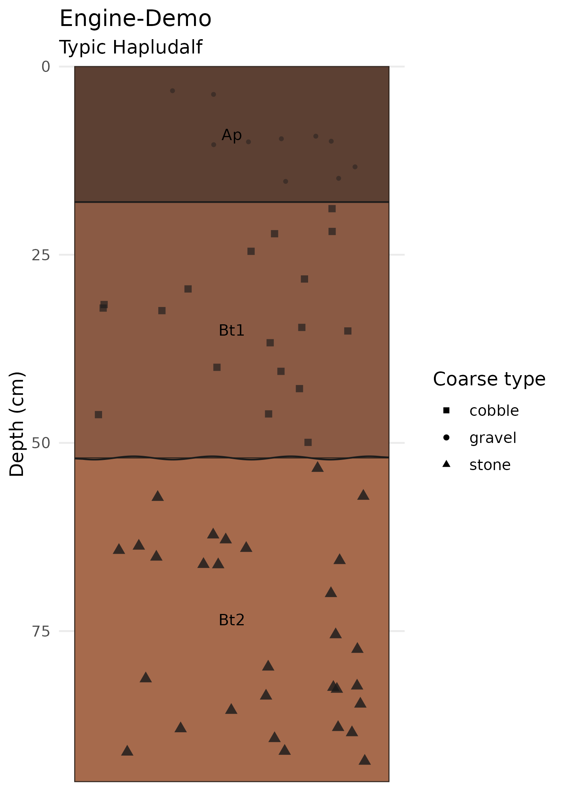
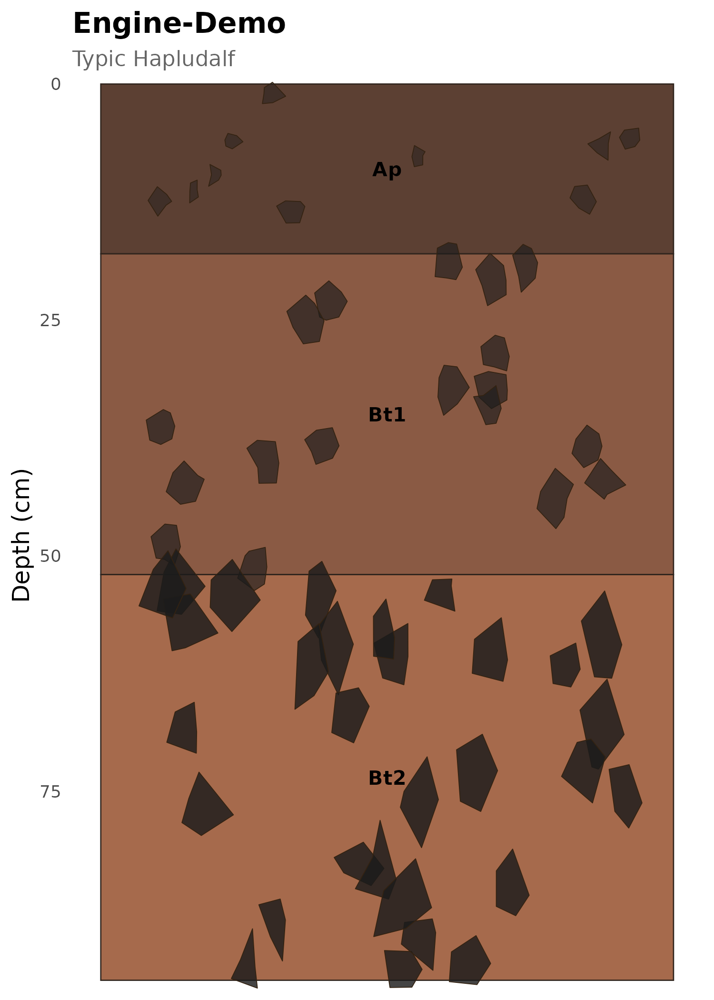
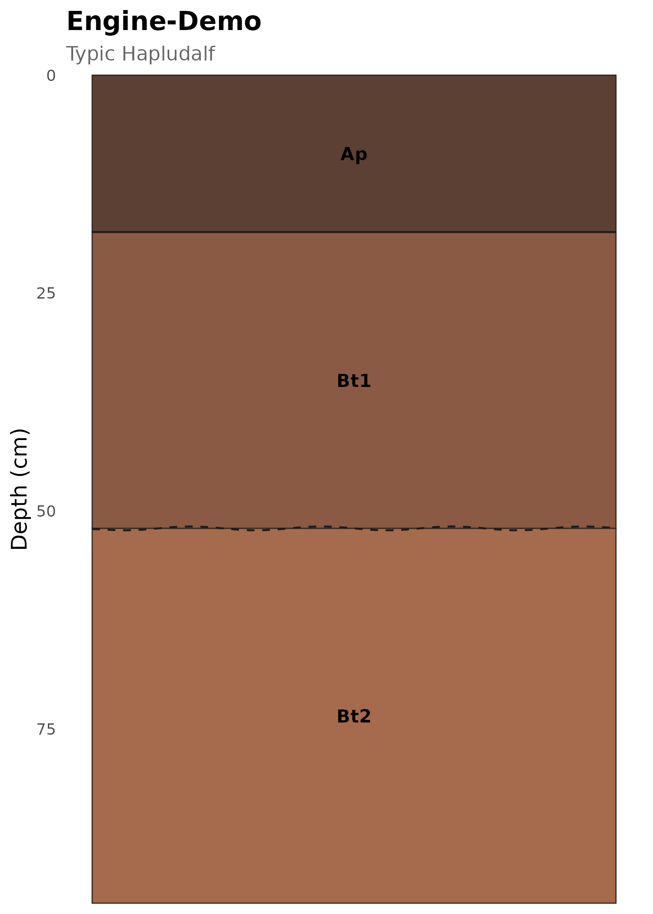
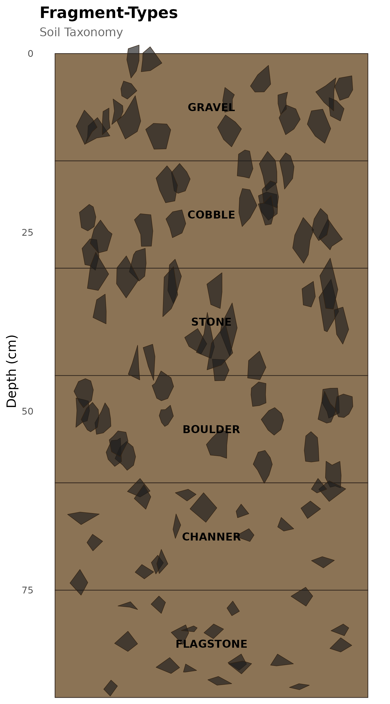
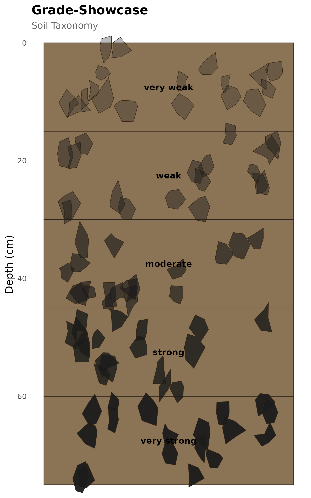
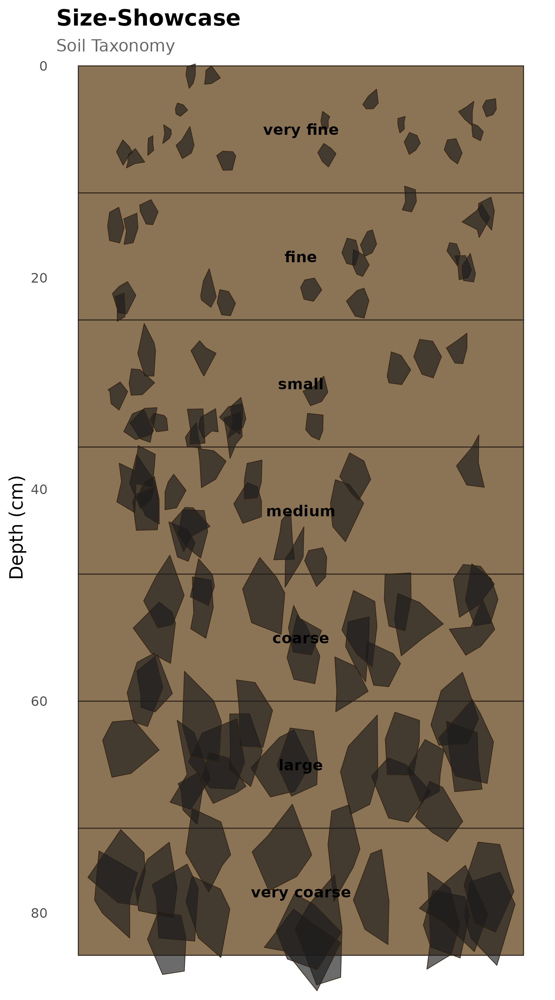
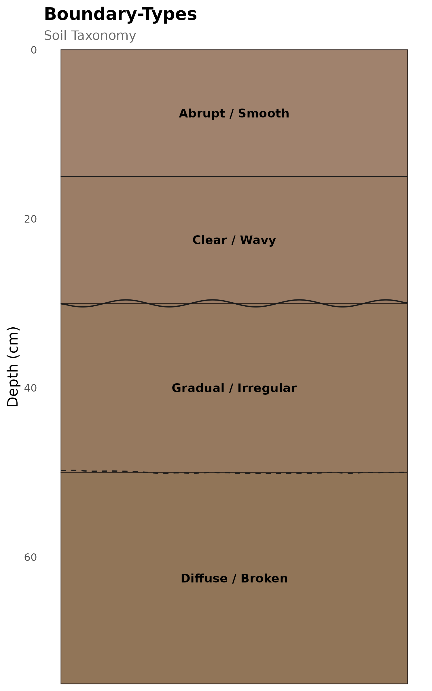

Graphical Engines: Advanced Visualization
Source:vignettes/graphical-engines.Rmd
graphical-engines.RmdOverview
soilgraph ships with three graphical engines that convert soil morphological properties into visual attributes: nbsp; | Engine | Encodes | Visual output | |—|—|—| | Coarse Fragment Engine | type, size, abundance, cementation grade | Irregular polygons | | Horizon Boundary Engine | shape (topography), grade (distinctness) | Irregular boundary lines | | Visualization Utilities | color, palette, theme, encoding | Themes and helpers |
The primary entry point is plot_soil_profile_advanced(),
which combines all three engines in a single call.
Setting up a reference profile
We will reuse this 3-horizon profile throughout the article:
profile <- new_soil_profile(
site_id = "Engine-Demo",
classification = list(system = "Soil Taxonomy", taxon = "Typic Hapludalf"),
horizons = list(
new_soil_horizon(
top = 0, bottom = 18, label = "Ap",
texture = "silt loam", color = "#5C4033",
boundary_grade = "clear", boundary_shape = "smooth",
coarse_type = "gravel", coarse_abundance = "few",
coarse_grade = "weak", coarse_size = "fine"
),
new_soil_horizon(
top = 18, bottom = 52, label = "Bt1",
texture = "clay loam", color = "#8A5A44",
boundary_grade = "gradual", boundary_shape = "wavy",
coarse_type = "cobble", coarse_abundance = "common",
coarse_grade = "moderate", coarse_size = "medium"
),
new_soil_horizon(
top = 52, bottom = 95, label = "Bt2",
texture = "clay", color = "#A66A4C",
boundary_grade = "diffuse", boundary_shape = "irregular",
coarse_type = "stone", coarse_abundance = "many",
coarse_grade = "strong", coarse_size = "coarse"
)
)
)Basic vs. advanced rendering
Compare the three rendering modes:
plot_soil_profile(profile)
Basic profile — colored rectangles with labels.
plot_soil_profile_fragments(profile, seed = 42)
Point-based fragment markers.
plot_soil_profile_advanced(profile, seed = 42)
#> Scale for fill is already present.
#> Adding another scale for fill, which will replace the existing scale.
#> Scale for alpha is already present.
#> Adding another scale for alpha, which will replace the existing scale.Advanced rendering with polygon fragments, boundary lines, and transition zones.
Toggling engine layers
You can enable or disable each engine independently:
plot_soil_profile_advanced(
profile,
show_fragments = TRUE,
show_boundaries = FALSE,
show_transition_zones = FALSE,
seed = 42
)
#> Scale for fill is already present.
#> Adding another scale for fill, which will replace the existing scale.
Polygon fragments only — boundaries disabled.
plot_soil_profile_advanced(
profile,
show_fragments = FALSE,
show_boundaries = TRUE,
show_transition_zones = TRUE,
seed = 42
)
Boundaries and transition zones only — fragments disabled.
Coarse Fragment Engine
Fragment types
Six fragment types are supported, each with a distinct polygon shape:
| Type | Vertices | Aspect ratio | Irregularity |
|---|---|---|---|
| gravel | 6 | 1.0 | 0.20 |
| cobble | 7 | 1.1 | 0.18 |
| stone | 5 | 1.2 | 0.25 |
| boulder | 8 | 1.0 | 0.15 |
| channer | 4 | 2.0 | 0.10 |
| flagstone | 4 | 2.5 | 0.08 |
fragment_types <- c("gravel", "cobble", "stone", "boulder", "channer", "flagstone")
type_profile <- new_soil_profile(
site_id = "Fragment-Types",
horizons = lapply(seq_along(fragment_types), function(i) {
new_soil_horizon(
top = (i - 1) * 15, bottom = i * 15,
label = toupper(fragment_types[i]),
color = "#8B7355",
coarse_type = fragment_types[i],
coarse_abundance = "common",
coarse_grade = "moderate",
coarse_size = "medium",
boundary_shape = "smooth",
boundary_grade = "clear"
)
})
)
plot_soil_profile_advanced(type_profile, show_boundaries = FALSE, seed = 42)
#> Scale for fill is already present.
#> Adding another scale for fill, which will replace the existing scale.
All fragment types at equal abundance.
Fragment abundance
The abundance property controls the number of fragments rendered in each horizon. Five levels are supported:
| Abundance | Approximate count |
|---|---|
| very few | 6 |
| few | 10 |
| common | 18 |
| many | 30 |
| abundant | 42 |
abundances <- c("very few", "few", "common", "many", "abundant")
abundance_profile <- new_soil_profile(
site_id = "Abundance-Gradient",
horizons = lapply(seq_along(abundances), function(i) {
new_soil_horizon(
top = (i - 1) * 15, bottom = i * 15,
label = abundances[i],
color = "#8B7355",
coarse_type = "gravel",
coarse_abundance = abundances[i],
coarse_grade = "moderate",
coarse_size = "medium",
boundary_shape = "smooth",
boundary_grade = "clear"
)
})
)
plot_soil_profile_advanced(abundance_profile, show_boundaries = FALSE, seed = 42)
#> Scale for fill is already present.
#> Adding another scale for fill, which will replace the existing scale.
Fragment abundance gradient.
Fragment cementation grade
The grade property is mapped to alpha (transparency), representing cementation from very weak (translucent) to very strong (opaque):
| Grade | Alpha |
|---|---|
| very weak | 0.30 |
| weak | 0.45 |
| moderate | 0.65 |
| strong | 0.82 |
| very strong | 0.95 |
grades <- c("very weak", "weak", "moderate", "strong", "very strong")
grade_profile <- new_soil_profile(
site_id = "Grade-Showcase",
horizons = lapply(seq_along(grades), function(i) {
new_soil_horizon(
top = (i - 1) * 15, bottom = i * 15,
label = grades[i],
color = "#8B7355",
coarse_type = "gravel",
coarse_abundance = "common",
coarse_grade = grades[i],
coarse_size = "medium",
boundary_shape = "smooth",
boundary_grade = "clear"
)
})
)
plot_soil_profile_advanced(grade_profile, show_boundaries = FALSE, seed = 42)
#> Scale for fill is already present.
#> Adding another scale for fill, which will replace the existing scale.
Fragment cementation grade gradient.
Fragment size classes
Size is mapped to polygon scale:
sizes <- c("very fine", "fine", "small", "medium", "coarse", "large", "very coarse")
size_profile <- new_soil_profile(
site_id = "Size-Showcase",
horizons = lapply(seq_along(sizes), function(i) {
new_soil_horizon(
top = (i - 1) * 12, bottom = i * 12,
label = sizes[i],
color = "#8B7355",
coarse_type = "gravel",
coarse_abundance = "common",
coarse_grade = "moderate",
coarse_size = sizes[i],
boundary_shape = "smooth",
boundary_grade = "clear"
)
})
)
plot_soil_profile_advanced(size_profile, show_boundaries = FALSE, seed = 42)
#> Scale for fill is already present.
#> Adding another scale for fill, which will replace the existing scale.
Fragment size class comparison.
Horizon Boundary Engine
Boundary shapes (topography)
Shape determines the distortion pattern of the boundary line:
| Shape | Pattern | Distortion |
|---|---|---|
| smooth | flat | 0.0 |
| wavy | sine-like | 0.6 |
| irregular | multi-frequency | 0.8 |
| broken | segment offsets | 1.0 |
| discontinuous | gaps | 0.9 |
Boundary grades (distinctness)
Grade controls line thickness and dash pattern:
| Grade | Line width | Line type |
|---|---|---|
| abrupt | 0.8 | solid |
| clear | 0.5 | solid |
| gradual | 0.35 | dashed |
| diffuse | 0.2 | dotted |
boundary_profile <- new_soil_profile(
site_id = "Boundary-Types",
horizons = list(
new_soil_horizon(0, 15, label = "Abrupt / Smooth", color = "#A0826D",
boundary_grade = "abrupt", boundary_shape = "smooth"),
new_soil_horizon(15, 30, label = "Clear / Wavy", color = "#9B7D66",
boundary_grade = "clear", boundary_shape = "wavy"),
new_soil_horizon(30, 50, label = "Gradual / Irregular", color = "#96795F",
boundary_grade = "gradual", boundary_shape = "irregular"),
new_soil_horizon(50, 75, label = "Diffuse / Broken", color = "#917558",
boundary_grade = "diffuse", boundary_shape = "broken")
)
)
plot_soil_profile_advanced(
boundary_profile,
show_fragments = FALSE,
show_boundaries = TRUE,
show_transition_zones = TRUE,
seed = 42
)
Boundary grade and shape combinations.
Seed reproducibility
All random elements (fragment placement, polygon perturbation,
boundary noise) are seeded. The same seed value always
produces the same plot:
p1 <- plot_soil_profile_advanced(profile, seed = 42)
#> Scale for fill is already present.
#> Adding another scale for fill, which will replace the existing scale.
#> Scale for alpha is already present.
#> Adding another scale for alpha, which will replace the existing scale.
p2 <- plot_soil_profile_advanced(profile, seed = 42)
#> Scale for fill is already present.
#> Adding another scale for fill, which will replace the existing scale.
#> Scale for alpha is already present.
#> Adding another scale for alpha, which will replace the existing scale.
# Both plots are identical
identical(
ggplot2::ggplot_build(p1)$data,
ggplot2::ggplot_build(p2)$data
)
#> [1] TRUELow-level engine functions
For custom visualizations you can call the engines directly. These
functions are internal (not exported), so use the :::
operator:
# Prepare horizon data
horizon_data <- soilgraph:::build_horizon_plot_data(profile)
head(horizon_data[, c("label", "top", "bottom", "fill", "boundary_shape", "coarse_type")])
#> label top bottom fill boundary_shape coarse_type
#> 1 Ap 0 18 #5C4033 smooth gravel
#> 2 Bt1 18 52 #8A5A44 wavy cobble
#> 3 Bt2 52 95 #A66A4C irregular stone
# Generate boundary paths
boundary_paths <- soilgraph:::build_boundary_paths(horizon_data, seed = 42)
head(boundary_paths)
#> x y boundary_id boundary_shape boundary_grade
#> 1 0.000000000 18 b1 smooth clear
#> 2 0.005025126 18 b1 smooth clear
#> 3 0.010050251 18 b1 smooth clear
#> 4 0.015075377 18 b1 smooth clear
#> 5 0.020100503 18 b1 smooth clear
#> 6 0.025125628 18 b1 smooth clear
# Generate fragment polygons
fragment_polys <- soilgraph:::build_fragment_polygons(profile, seed = 42)
head(fragment_polys)
#> x y fragment_id fragment_type grade alpha color
#> 1 0.8653283 12.47324 h1_f1 gravel weak 0.45 #1B1B1B
#> 2 0.8535221 13.80316 h1_f1 gravel weak 0.45 #1B1B1B
#> 3 0.8348028 13.14962 h1_f1 gravel weak 0.45 #1B1B1B
#> 4 0.8192196 12.06979 h1_f1 gravel weak 0.45 #1B1B1B
#> 5 0.8273405 10.86124 h1_f1 gravel weak 0.45 #1B1B1B
#> 6 0.8495730 10.70867 h1_f1 gravel weak 0.45 #1B1B1BThese data frames can be used with standard ggplot2 geoms for fully customized visualizations.
Summary
The three graphical engines translate soil morphological properties into consistent visual encodings:
- Fragments: type → shape, size → scale, abundance → count, grade → alpha
- Boundaries: shape → distortion pattern, grade → line weight & dash
- Utilities: color validation, palette generation, contrast detection, theming
All engines are deterministic (seeded), composable (toggle independently), and built on ggplot2 layers.